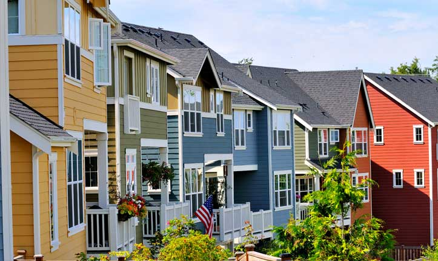
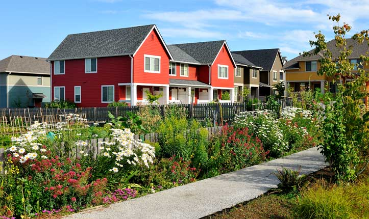
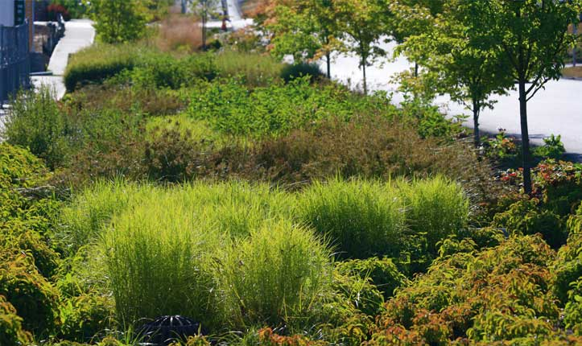
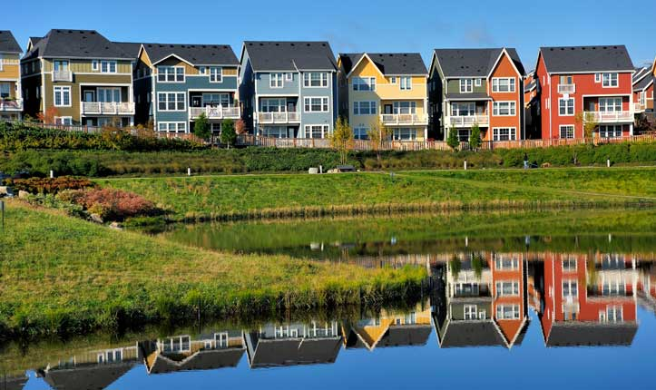
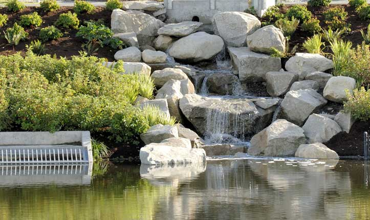
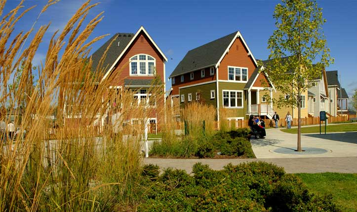
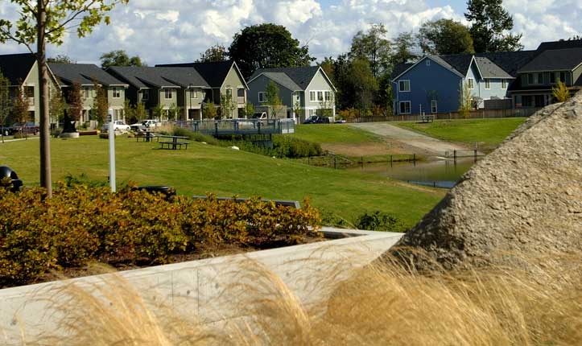
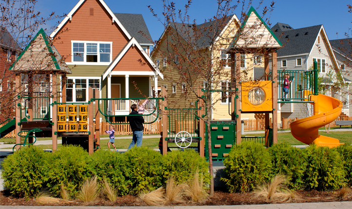
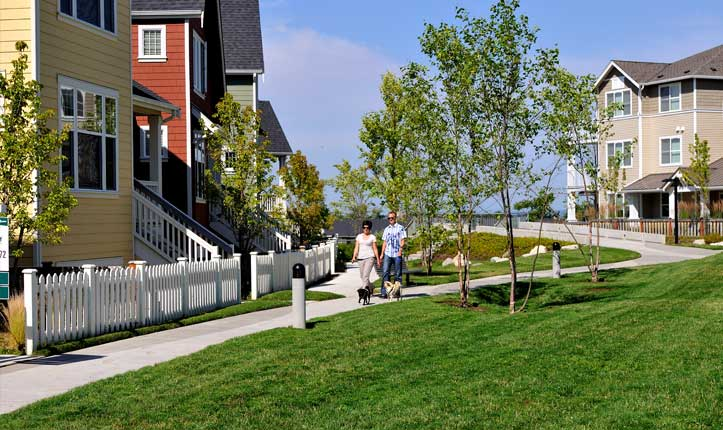

PROJECT TYPE
- Urban
- Re-development Plan
- Housing Community
- Affordable Housing
- Mixed-use
- Creek
- Pond
Environmental Benefits
- Captures Water
- Cleans Water
- Conserves Water
- Ecologically Manages Stormwater
- Improves Walkability
- Preserves Plants
- Protects Water Supply
- Reduces CO2 emissions
- Reintroduces Native Plants

Links
- High Point Housing Web site
- High Point Neighborhood Web site
- High Point Case Study (Sustainable Sites Initiative)
- High Point Environmental Impact Statement
- High Point, Seattle Housing Authority
- High Point: Seattle’s Green Community (Fast Company, 2008)
- High Point: Seattle’s Green Community (The Seattle Times, 2006)
- How High Point’s Stormwater Management System Works
High Point
Seattle, Washington, U.S.A.- 
Close Me!
Market-rate housing, low-income rentals, and affordable housing are indistinguishable in this sustainable redevelopment of 1940s WWII worker housing. The Seattle Housing Authority received funding from U.S. Department of Housing and Urban Redevelopment (HUD) and Seattle Public Utilities with the Department of Ecology to re-develop the 120-acre site as a sustainable community that would also protect the Longfellow Creek basin. Longfellow Creek is one of Seattle’s high priority salmon-bearing creeks, with fish populations of coho salmon, cutthroat trout and steelhead trout.
Photo: © Mithun, Juan Hernandez
Photo 1 of 9
- 
Close Me!
Biofiltration swale cells line High Point’s streets, which are planted with a variety of native and drought-tolerant shrubs, trees, and grasses. The vegetation and amended soil below filter toxins and attenuate storm events.
Photo: © Mithun, Juan Hernandez
Photo 2 of 9
- 
Close Me!
Certain bioinfiltration swale cells along the edge of the development were designed with weirs, to help control the rate of water flow along with providing water quality.
Photo: © Mithun, Juan Hernandez
Photo 3 of 9
- 
Close Me!
The High Point pond serves as a central stormwater collection pond for flood control and providing additional water quality treatment. Trails, sculptures, and viewing platforms were integrated to give the pond environment a park-like atmosphere.
Photo: © Mithun, Juan Hernandez
Photo 4 of 9
- 
Close Me!
Instead of polluted runoff, High Point’s natural drainage system now provides treated water for Longfellow Creek, a four mile-long creek system running through West Seattle. The right-of-way drainage system attenuates storm events and filters out contaminants to help enhance the creek as a functioning ecosystem.
Photo: © Mithun, Juan Hernandez
Photo 5 of 9
- 
Close Me!
Allergen-free landscape guidelines helped significantly reduce asthma rates among the community’s residents. Research by the King County Health Department revealed a 67 percent reduction in urgent emergency room visits after families moved back in.
Photo: © Mithun, Juan Hernandez
Photo 6 of 9
- 
Close Me!
Drought-tolerant plants minimize the need for irrigation. Right-of-way maintenance guidelines were developed to provide residents with an easy-to-follow toolbox of recommendations that include maintenance schedules and trouble-shooting advice.
Photo: © Mithun, Juan Hernandez
Photo 7 of 9
- 
Close Me!
Small pocket parks in High Point’s 120 acres are situated so that parents and caregivers inside their homes can easily monitor children playing outside. The open plan also includes community garden spaces and a large market garden where residents can grow and sell produce.
Photo: © Mithun, Juan Hernandez
Photo 8 of 9
- 
Close Me!
The High Point community was involved in all design aspects of the project. One demand by the community was energy-efficient housing to help lower annual energy spending. Three hundred rental units at High Point are now Energy Star-certified, the largest collection in the U.S. Priced per square-foot, the certified homes are 37 percent more valuable.
Photo: © Mithun, Juan Hernandez
Photo 9 of 9
Project Facts
- High Point’s 1940’s WWII industry housing was redeveloped into a model for sustainable affordable housing community. Forty-five percent of the 1,600 new housing units are affordable, low-income rentals.
- High Point includes one of the first “complete streets” in Seattle. Complete streets provide equal access for pedestrians, bikes, cars, and transit.
- High Point includes a large central commons park, pocket parks, medical and dental clinic, a neighborhood center, library, a market garden, p-patches, art installations, and integrated open space.
- All 34 blocks of the High Point community integrate a natural drainage system, one of the earliest examples of large urban sustainable stormwater management system in the U.S.
- Various types of porous surfaces make up a significant portion of the public and private sidewalks and private parking spaces. High Point also features Washington’s first pervious concrete street in the public right of way.
- Allergen-free landscape guidelines for Breathe-Easy™ Homes helped reduce asthma, bringing the emergency room visit rate down 67 percent.
- During the redevelopment, more than 3,000 new trees were planted; 107 mature trees — valued at $1.5 million — were saved.
- Seattle’s Green Living Expo 2006 was hosted by High Point.
 This Web site has been made possible through a grant by:
This Web site has been made possible through a grant by: